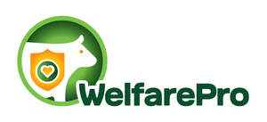
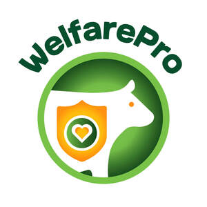

Trade Mark Journal No.2026/009 27 February 2026
UK00004340022 12 February 2026 (35,42,44)
Mark 1

Mark 2

- Class 35
- Advertising; business management; business administration; office functions; administration of agricultural welfare programmes; business advisory services relating to the establishment and operation of animal welfare standards; promotion of goods and services through the administration of certification schemes; commercial administration of the licensing of the goods and services of others; business consultancy and information services for farmers and commercial customers regarding compliance with agricultural standards; business consulting services in the dairy, agriculture and farming field; provision of business information relating to the dairy, agriculture and farming industry; marketing and promotional services; advertising and marketing services provided via social media; production of video recordings for advertising and marketing purposes; promotional sponsorship; retail and wholesale services, including online, in relation to food, beverages, milk and dairy products; supply chain management services; inventory management services; business management of logistics, supply and demand forecasting and product distribution processes for others; procurement services for others; tracking, collection, and processing of data for supply chain management; data processing; database management services; compilation and systematization of data in computer databases; loyalty, incentive and bonus program services; advertising services to promote public awareness of environmental issues and initiatives; provision of advice and information related to all the aforementioned services.
- Class 42
- Scientific and technological services; agricultural, biological, and clinical research; research in the field of nutrition and food; testing of food and beverages; quality control, authentication, and certification services; quality evaluation and analysis of agricultural standards; compliance auditing in the field of animal welfare; technical data analysis for livestock traceability; inspection of livestock farms for quality control purposes; providing technical information and advice relating to animal welfare standards; research and development in the field of sustainable and ethical farming practices; laboratory services for agricultural research; design and development of computer software for logistics and supply chain management; software as a service [SaaS]; providing non-downloadable software for tracking and processing data related to supply chain management and inventory; data storage and certification via blockchain; providing technological information about environmentally-conscious and green innovations; provision of advice and information related to all the aforementioned services.
- Class 44
- Agriculture, horticulture and forestry services; dairy farming services; cattle farming services; advisory services relating to animal welfare; professional consultancy relating to agriculture and livestock farming; providing information regarding the breeding and care of farm animals; providing educational information in the field of animal welfare; provision of information and advisory services relating to the production of milk; medical and health related services for animals; hygienic care for animals; nutrition consultancy; dietetic advisory services; agricultural services relating to environmental conservation; provision of advice and information related to all the aforementioned services.
Arla Foods Limited
Representative: Gill Jennings & Every LLP